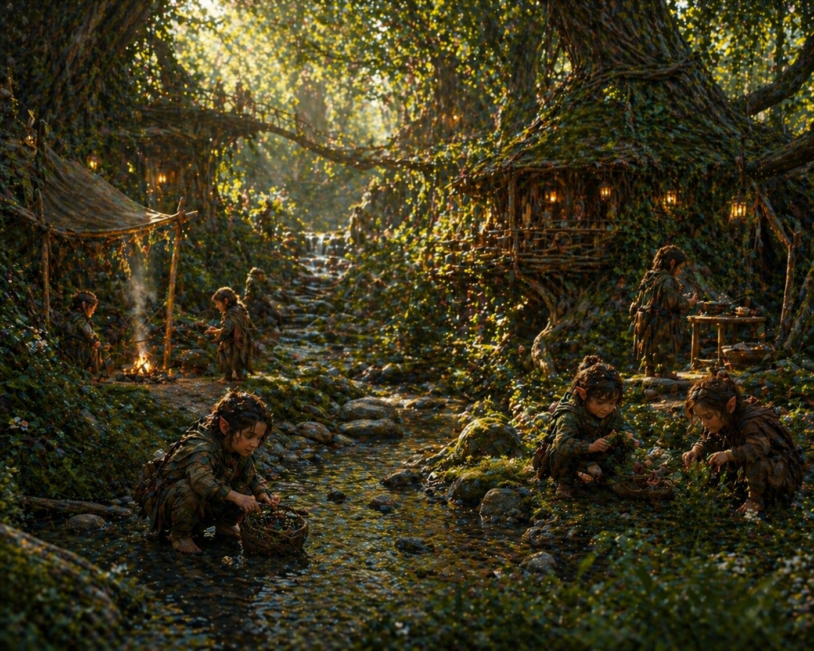
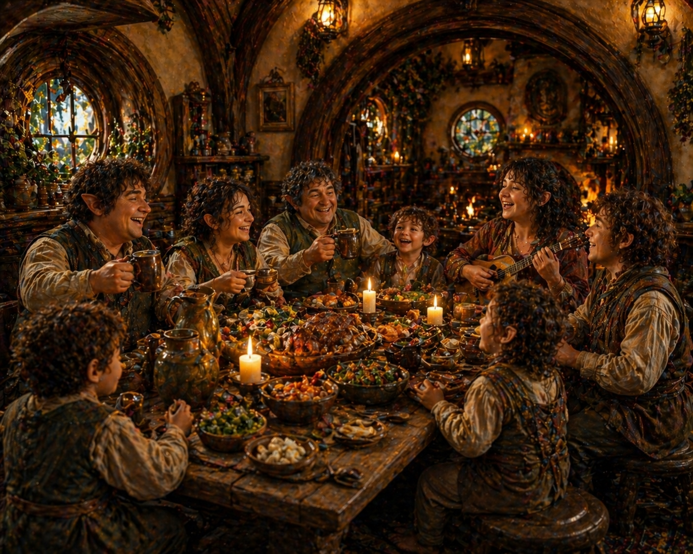
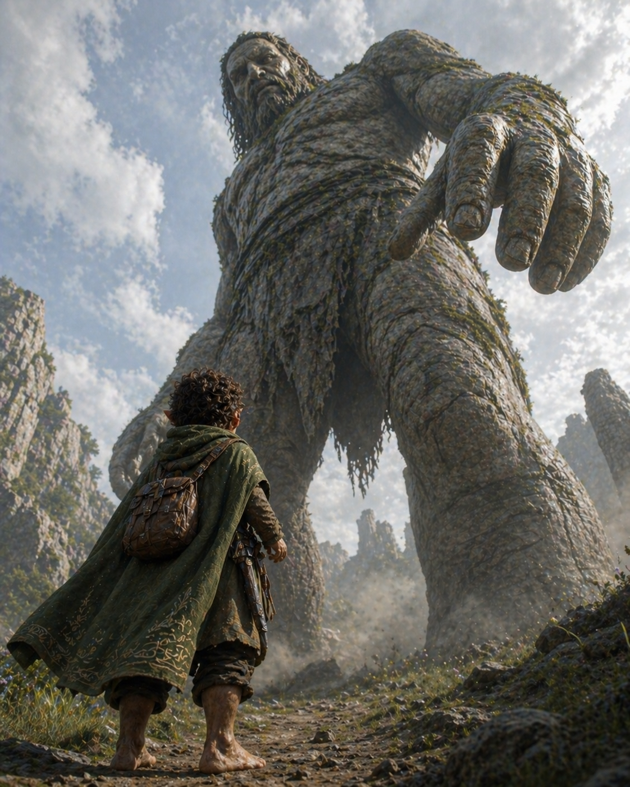
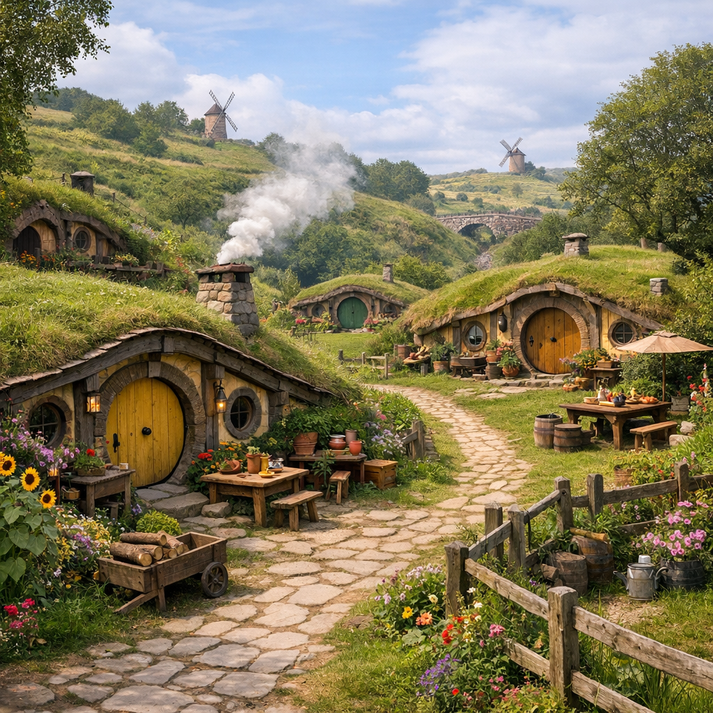

You have chosen Hearthkin

Origin
The Hearthkin, known among the Aelthiryn as the Elarin, or most commonly known as Halflings, trace their beginnings to a quiet divergence from the earliest elves. In an age when Eldora was still untamed and ancient beings roamed freely, some among the Aelthiryn were forced to adapt as these towering threats hunted across forests, waterways, and open lands. Over generations, they changed—not by choice, but by necessity—becoming smaller, lighter, and far more attuned to concealment and subtle movement. What began as survival gradually became transformation.
In time, these altered kin emerged as something entirely their own—not lesser, but different. Their forms grew closer to the ground, their presence quieter, their instincts sharper, allowing them to endure where others could not. Though they share a common origin with the Aelthiryn, they no longer walk the same path. The Hearthkin became a people shaped not by awakening or creation, but by the quiet necessity to survive—and in doing so, to become something new.

Culture and Way of Life
Hearthkin culture is rooted in community, adaptability, and the quiet art of living well. They gather in small settlements—villages, townships, and family-led enclaves—where daily life revolves around shared responsibility and personal freedom. No single path defines them; within each community, individuals pursue a wide range of callings, from craft and trade to exploration and mischief. Their societies are often guided by prominent family lines, not as rigid authorities, but as living traditions that shape identity and belonging.
Despite their humble scale, Hearthkin communities are vibrant and diverse, filled with laughter, storytelling, and subtle rivalries between families. They value comfort, but not complacency—each generation is encouraged to find its own way, even if it strays from expectation. While they rarely seek dominance or expansion, they are deeply connected to the places they inhabit, blending seamlessly into their surroundings. To outsiders, they may seem simple or unassuming, but beneath that lies a culture built on resilience, cleverness, and an enduring sense of home.

Strengths and Weaknesses
Hearthkin excel in adaptability, awareness, and subtlety. Their smaller stature grants them natural agility and ease of movement, allowing them to navigate tight spaces, dense terrain, and crowded environments with little difficulty. They are quick thinkers, often relying on instinct and creativity to overcome challenges rather than brute force. Whether through negotiation, improvisation, or quiet observation, Hearthkin tend to find solutions where others might see none.
However, their strengths come with limitations. They are not built for prolonged direct confrontation, and may struggle in situations that demand raw power or sustained aggression. Their preference for comfort and familiarity can also make them hesitant to engage with large-scale conflict or overwhelming change. While capable of great courage, it often emerges only when something they value is threatened, rather than as a natural inclination toward battle.

Beliefs
Hearthkin believe that life is best lived in balance—between effort and rest, ambition and contentment, self and community. They do not seek to dominate the world or uncover all its secrets, but to find their place within it and shape a life that feels whole. Legacy, to them, is not measured in monuments or conquest, but in the lives they touch and the homes they build. Each individual is free to define their own path, guided but not constrained by the traditions of their family line.
Their origins, though not always spoken of directly, linger in their worldview. Survival is not taken for granted, and there is an unspoken understanding that what exists can be lost. This fosters a quiet appreciation for the present, as well as a subtle resilience beneath their warmth. They may not dwell on the past as others do, but its influence can be felt in their instincts—their caution, their awareness, and their ability to endure without drawing attention to themselves.

Battle Style
Hearthkin approach combat with caution, precision, and adaptability. They avoid direct confrontation when possible, favoring positioning, timing, and clever use of the environment. Rather than overpowering their opponents, they outmaneuver them—striking when opportunities arise and withdrawing before retaliation can take hold. Their movements are fluid and unpredictable, making them difficult to pin down or anticipate.
In battle, Hearthkin rely on coordination and quick thinking, often turning disadvantage into opportunity through misdirection and improvisation. They excel in skirmishes, ambushes, and situations that reward awareness over strength. While they may not seek conflict, when forced into it, they fight with a quiet determination—protecting what matters, and surviving by any means necessary.
Where Does Your Heart Find its Home?
Each clan reflects a way of life—shaped by the home you build, the values you carry, and the people you stand beside.
Ways of the Hearth